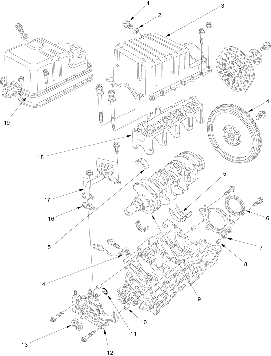

 |
- DRAIN BOLT
- WASHER
- OIL PAN
Installation for Aluminium Oil Pan Type, page 7-24 in the '01 Civic Shop Manual on this CD
- FLYWHEEL (M/T)
- THRUST WASHERS
- CRANKSHAFT OIL SEAL, TRANSMISSION END
Installation, page 7-11
- ENGINE BLOCK END COVER
- DOWEL PIN
- CRANKSHAFT
End play, page 7-6 in the '01 Civic Shop Manual on this CD
Runout, page 7-13 in the '01 Civic Shop Manual on this CD
Out-of-Round, page 7-13 in the '01 Civic Shop Manual on this CD
Removal, page 7-11 in the '01 Civic Shop Manual on this CD
Installation, page7-11
- DOWEL PIN
- O-RING
- OIL PUMP
Overhaul, page 8-9 in the '01 Civic Shop Manual on this CD
- CRANKSHAFT OIL SEAL, PULLEY END
Installation, page 8-9 in the '01 Civic Shop Manual on this CD
- KNOCK SENSOR
Replacement, page 7-26 in the '01 Civic Shop Manual on this CD
- MAIN BEARINGS
Oil clearance, page 7-5
Selection, page 7-6
- GASKET
- OIL SCREEN
- MAIN BEARING CAP BRIDGE
- OIL PAN
Installation for Steel Oil Pan Type, page 7-25 in the '01 Civic Shop Manual on this CD
|